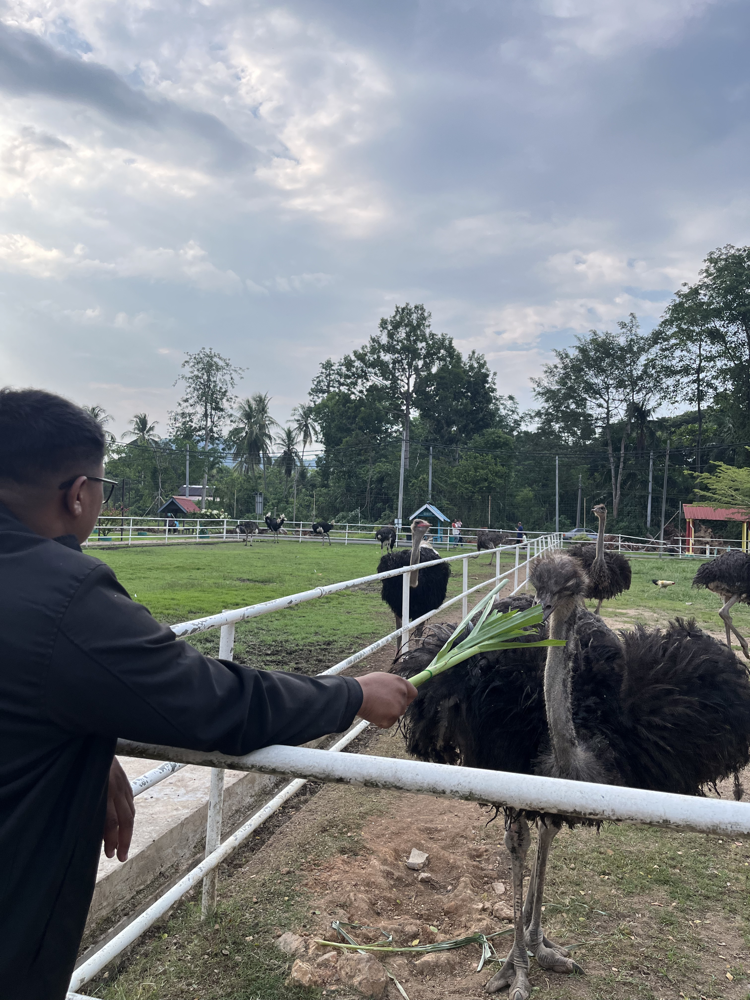

ABOUT ME
My name is Muhammad Amirul Aiman Bin Zaini. I am currently working at Taman Agrovet as an animal care and livestock manager under the Perlis State Veterinary Services Department. My main responsibility is managing livestock, conducting regular health checks, and ensuring the overall well-being of all animals in the agrovet park.I am committed to maintaining animal health and performing my daily tasks with care, responsibility, and consistency.
Animal Care & Livestock Management at Taman Agrovet

I am currently working under the Perlis State Veterinary Services Department at Taman Agrovet, where I am responsible for the daily care and management of livestock. My role includes monitoring animal health conditions, ensuring proper feeding routines, maintaining hygiene and cleanliness of animal enclosures, and supporting the overall welfare of the animals in the agrovet park. In addition, I assist in identifying any early signs of illness or abnormal behaviour among animals and take appropriate action by reporting to veterinary officers. I also help in maintaining a safe and healthy environment for both animals and visitors by following standard animal care procedures and park regulations. My work requires patience, consistency, and strong attention to detail to ensure that all animals remain in good health and the agrovet environment is well-maintained.
Taman Agrovet Perlis (Perlis State Veterinary Services Department)
Taman Agrovet Perlis is a government-run agro-veterinary park under the Perlis State Veterinary Services Department. It focuses on livestock management, animal health care, and sustainable agricultural practices. The park provides a working environment for animal care professionals to manage livestock, monitor animal health, and support veterinary activities in a structured farm setting.
Contact
📧 Email: amirulaiman0075@gmail.com. 📞 Phone: 0167093146